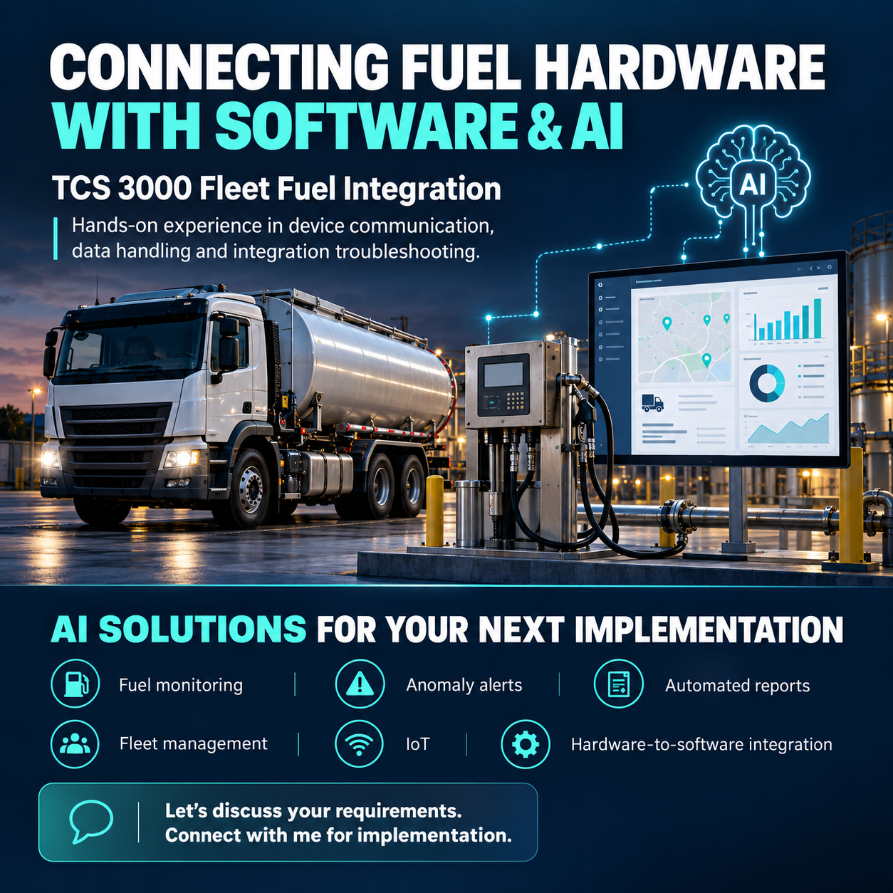

Hardware + Software Integration
TCS 3000 Fleet Fuel Integration
Developed a Python interface for the TCS 3000 Electronic Register using technical documentation, synchronized delivery tickets to a web interface and implemented API commands to start, stop and pause delivery operations.